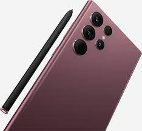

NETWORK Technology
GSM / CDMA / HSPA / EVDO / LTE / 5G
LAUNCH Announced 2022, February 09
Status Available. Released 2022, February 25
BODY Dimensions 163.3 x 77.9 x 8.9 mm (6.43 x 3.07 x 0.35 in)
Weight 228 g / 229 g (mmWave) (8.04 oz)
Build Glass front (Gorilla Glass Victus+), glass back (Gorilla Glass Victus+), aluminum frame
SIM Single SIM (Nano-SIM) or Dual SIM (2 Nano-SIMs + eSIM, dual stand-by)
IP68 dust/water resistant (up to 1.5m for 30 mins)
Armour aluminum frame with tougher drop and scratch resistance (advertised)
Stylus, 2.8ms latency (Bluetooth integration, accelerometer, gyro)
DISPLAY Type Dynamic AMOLED 2X, 120Hz, HDR10+, 1750 nits (peak)
Size 6.8 inches, 114.7 cm2 (~90.2% screen-to-body ratio)
Resolution 1440 x 3088 pixels (~500 ppi density)
Protection Corning Gorilla Glass Victus+
Always-on display
PLATFORM OS Android 12, One UI 4.1
Chipset Exynos 2200 (4 nm) - Europe
Qualcomm SM8450 Snapdragon 8 Gen 1 (4 nm) - ROW
CPU Octa-core (1x2.8 GHz Cortex-X2 & 3x2.50 GHz Cortex-A710 & 4x1.8 GHz Cortex-A510) - Europe
Octa-core (1x3.00 GHz Cortex-X2 & 3x2.40 GHz Cortex-A710 & 4x1.70 GHz Cortex-A510) - ROW
GPU Xclipse 920 - Europe
Adreno 730 - ROW
MEMORY Card slot No
Internal 128GB 8GB RAM, 256GB 12GB RAM, 512GB 12GB RAM, 1TB 12GB RAM
UFS 3.1
MAIN CAMERA Quad 108 MP, f/1.8, 23mm (wide), 1/1.33", 0.8µm, PDAF, Laser AF, OIS
10 MP, f/4.9, 230mm (periscope telephoto), 1/3.52", 1.12µm, dual pixel PDAF, OIS, 10x optical zoom
10 MP, f/2.4, 70mm (telephoto), 1/3.52", 1.12µm, dual pixel PDAF, OIS, 3x optical zoom
12 MP, f/2.2, 13mm, 120˚ (ultrawide), 1/2.55", 1.4µm, dual pixel PDAF, Super Steady video
Features LED flash, auto-HDR, panorama
Video 8K@24fps, 4K@30/60fps, 1080p@30/60/240fps, 720p@960fps, HDR10+, stereo sound rec., gyro-EIS
SELFIE CAMERA Single 40 MP, f/2.2, 26mm (wide), 1/2.82", 0.7µm, PDAF
Features Dual video call, Auto-HDR
Video 4K@30/60fps, 1080p@30fps
SOUND Loudspeaker Yes, with stereo speakers
3.5mm jack No
32-bit/384kHz audio
Tuned by AKG
COMMS WLAN Wi-Fi 802.11 a/b/g/n/ac/6e, dual-band, Wi-Fi Direct, hotspot
Bluetooth 5.2, A2DP, LE
GPS Yes, with A-GPS, GLONASS, BDS, GALILEO
NFC Yes
Radio No
USB USB Type-C 3.2, USB On-The-Go
FEATURES Sensors Fingerprint (under display, ultrasonic), accelerometer, gyro, proximity, compass, barometer
Samsung DeX, Samsung Wireless DeX (desktop experience support)
Bixby natural language commands and dictation
Samsung Pay (Visa, MasterCard certified)
Ultra Wideband (UWB) support
BATTERY Type Li-Ion 5000 mAh, non-removable
Charging Fast charging 45W
USB Power Delivery 3.0
Fast Qi/PMA wireless charging 15W
Reverse wireless charging 4.5W
MISC Colors Phantom Black, White, Burgundy, Green, Graphite, Red, Sky Blue, Bora Purple
Models SM-S908B, SM-S908B/DS, SM-S908U, SM-S908U1, SM-S908W, SM-S908N, SM-S9080, SM-S908E, SM-S908E/DS
SAR 1.18 W/kg (head) 0.98 W/kg (body)
SAR EU 1.05 W/kg (head) 1.58 W/kg (body)
Price ₹ 92,220 / $ 879.00 / £ 955.00 / € 1,023.75 / C$ 1,209.99
TESTS Performance AnTuTu: 968359 (v9)
GeekBench: 3657 (v5.1)
GFXBench: 37fps (ES 3.1 onscreen)
Display Contrast ratio: Infinite (nominal)
Camera Photo / Video
Loudspeaker -27.3 LUFS (Good)
Battery life
Endurance rating 108h